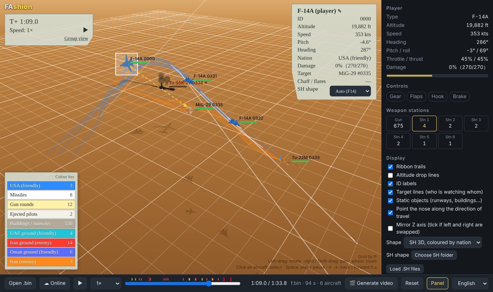
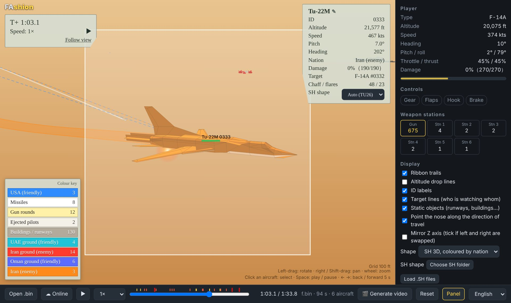
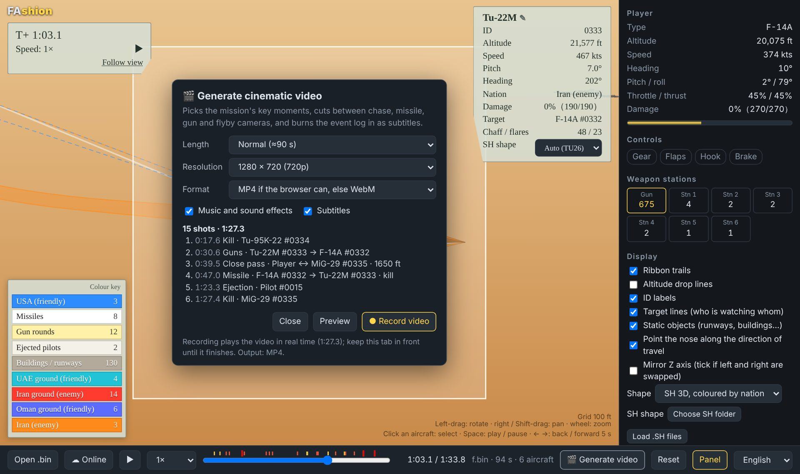

FAlogger
Record every Fighters Anthology mission while you fly, then watch it again in 3D in your browser: every aircraft, missile and gun burst, who was locked on to whom, every flare and chaff, and the moment each jet went down. One click turns the mission into a cinematic video.
一邊飛 Fighters Anthology，一邊把整場任務錄下來，之後在瀏覽器裡用 3D 重看：每一架飛機、每一枚飛彈和每一串機砲、誰鎖定了誰、每一發熱焰彈和干擾絲，以及每架飛機被擊落的那一刻。再按一下，就能把任務做成精彩影片。
Or get the files one by one:也可以分開下載： falogger.exe (7.1 MB) · falogger.py (26 KB)
Why I made this. I wanted ACMI for FA. ACMI (Air Combat Maneuvering Instrumentation) is the system real fighter squadrons use to record training dogfights: every jet's position, attitude and weapon shots are logged, and after landing the pilots replay the whole fight on a big screen to see who saw whom first and why a shot hit or missed. It is the debrief screen made famous by Top Gun.
FA never had one, so FAlogger reads the game's memory while you fly, and the replay page is the debrief room.
為什麼做這個。我想要 FA 也有 ACMI。ACMI（Air Combat Maneuvering Instrumentation，空戰演練儀）是真實戰鬥機部隊記錄空戰訓練的系統：每架飛機的位置、姿態和每一次開火都被記下來，落地後飛行員在大螢幕上重播整場纏鬥，看誰先發現誰、為什麼這一發打中或落空。《捍衛戰士》（Top Gun）裡講評室的那個畫面就是它。
FA 本來沒有這種東西，所以 FAlogger 在你飛行時讀取遊戲記憶體，重播網頁就是講評室。

What it records記錄了什麼
Ten times a second, for every object in the mission. Nothing in FA is changed: FAlogger only reads memory, like a cockpit camera.
每秒 10 次，記錄任務裡的每一個物件。FA 本身完全不會被修改：FAlogger 只讀記憶體，就像裝在座艙裡的攝影機。
Step 1 · Record a mission步驟 1 · 錄製任務
- Unzip
falogger.zipinto any folder, for exampleC:\FAlogger. The recordings are saved in this folder. - Double-click
falogger.exe. A console window opens and saysWaiting for FA.EXE to start...You can also start the game first: the order does not matter. - Start FA (FA.EXE or FA_BIG) and fly a mission as usual. When the mission starts the window shows
Mission started, recording to flight_20261116_153659.binand which object is your aircraft. - Every mission gets its own file. When you go back to the menus the file is closed, and the next mission starts a new one.
- When you quit FA, FAlogger lists the files it saved. Press Enter to close the window.
- 把
falogger.zip解壓到任何資料夾，例如C:\FAlogger。錄好的檔案會存在這個資料夾。 - 雙擊
falogger.exe。會開一個命令視窗，顯示Waiting for FA.EXE to start...。也可以先開遊戲，先後順序沒關係。 - 啟動 FA（FA.EXE 或 FA_BIG），照平常一樣飛任務。任務開始時視窗會顯示
Mission started, recording to flight_20261116_153659.bin，以及哪一個物件是你的飛機。 - 每一次任務各存一個檔。回到選單畫面時就關檔，下一次任務會開新檔。
- 關掉 FA 後，FAlogger 會列出這次存了哪些檔。按 Enter 關閉視窗。
falogger.exe is from an unknown publisher (it is not code-signed). Click More info → Run anyway, or run the Python version instead. If the window says OpenProcess failed, right-click falogger.exe and choose Run as administrator.falogger.exe 是不明發行者（沒有程式碼簽章）。按「其他資訊 → 仍要執行」，或改用 Python 版。如果視窗顯示 OpenProcess failed，在 falogger.exe 上按右鍵選「以系統管理員身分執行」。Python version and options
Python 版與參數
falogger.py is the same program as source code. It needs Python 3.8 or newer on Windows and nothing else. Run it from a command prompt; with no arguments it records flights, exactly like the exe. The exe takes the same options.
falogger.py 是同一個程式的原始碼，只需要 Windows 上的 Python 3.8 以上，不用裝其他套件。在命令提示字元執行；不加參數就是錄製飛行，跟 exe 一樣。exe 也接受同樣的參數。
python falogger.py # record flights (default) python falogger.py --hz 20 # 20 frames a second instead of 10 python falogger.py --flight dogfight.bin # fixed name: dogfight.bin, dogfight_2.bin… falogger.exe --help # all options
Other modes (objects, log, record, analyze) are research tools for finding new memory fields; players do not need them.
其他模式（objects、log、record、analyze）是用來找新記憶體欄位的研究工具，一般玩家用不到。
Step 2 · Open the recording in your browser步驟 2 · 在瀏覽器開啟錄製檔
- Open the replay page in Chrome, Edge or Firefox on a computer. Nothing is uploaded: the file is read inside your browser.
- Drag a
flight_*.binfile from Explorer onto the page, or press Open .bin at the bottom left and pick it. - If a file holds more than one mission (for example an older recording), a Mission menu appears in the bottom bar so you can pick which one to play.
- Press ▶ or Space to play.
- 在電腦上用 Chrome、Edge 或 Firefox 開啟重播網頁。檔案不會被上傳，是在你的瀏覽器裡讀取的。
- 從檔案總管把
flight_*.bin拖進網頁，或按左下角的「開啟 .bin」選擇檔案。 - 如果一個檔案裡有好幾次任務（例如舊版錄的檔），下方工具列會出現「任務」選單，可以選要播放哪一次。
- 按 ▶ 或 空白鍵 開始播放。
Step 3 · Watch and explore步驟 3 · 觀看與操作

Mouse and keyboard
滑鼠與鍵盤
| Do this | To |
|---|---|
| Left-drag | Rotate the camera around the selected aircraft |
| Right-drag or Shift + drag | Pan (switches to Free view) |
| Mouse wheel | Zoom in and out |
| Click an aircraft | Select it: the camera follows it and the info box shows its data |
| Space | Play / pause |
| ← → | Jump back / forward 5 seconds |
| 操作 | 作用 |
|---|---|
| 左鍵拖曳 | 繞著選取的飛機旋轉視角 |
| 右鍵拖曳或 Shift + 拖曳 | 平移（會切換成自由視角） |
| 滾輪 | 拉近、拉遠 |
| 點一架飛機 | 選取它：視角跟著它，資訊框顯示它的資料 |
| 空白鍵 | 播放 / 暫停 |
| ← → | 倒退 / 前進 5 秒 |
The bottom bar
下方工具列
| Control | What it does |
|---|---|
| Open .bin | Load a recording from your computer (or drag one onto the page). |
| ☁ Online | Browse, play, upload and share missions. See Share online. |
| ▶ and speed | Play / pause, and play at 0.25× to 16×. |
| Timeline | Drag to any moment. Ticks mark events: tall dark red = kills, red = shots, yellow = hits, gold = everything else. |
| Mission | Only when a file holds several missions: pick one. |
| 🎬 Generate video | Make a cinematic video. See Step 4. |
| Reset | Back to the default camera, following your aircraft. |
| Panel | Show or hide the right-hand panel (more room on small screens). |
| English / 繁體中文 | Language of the page, remembered for every FAshion page. |
| 控制項 | 作用 |
|---|---|
| 開啟 .bin | 從電腦載入錄製檔（也可以直接拖進網頁）。 |
| ☁ 線上 | 瀏覽、播放、上傳和分享任務。見線上分享。 |
| ▶ 和速度 | 播放 / 暫停，以及 0.25× 到 16× 的播放速度。 |
| 時間軸 | 拖到任何時間點。刻度標出事件：較高的深紅色是擊落、紅色是開火、黃色是命中、金色是其他事件。 |
| 任務 | 只有檔案裡有好幾次任務時才出現，用來選擇其中一次。 |
| 🎬 產生影片 | 製作精彩影片。見步驟 4。 |
| 重設 | 回到預設視角，跟著你的飛機。 |
| 面板 | 顯示或隱藏右側面板（小螢幕上可以多一點空間）。 |
| English / 繁體中文 | 網頁語言，所有 FAshion 網頁都會記住這個選擇。 |
On the 3D view
3D 畫面上
Mission time, playback speed and the camera mode button. Click it to cycle through Follow view (camera stays on the selected aircraft), Group view (frames every aircraft at once, best for the big picture) and Free view (camera stays where you put it).
任務時間、播放速度，以及視角按鈕。點它可以輪流切換「跟隨視角」（鏡頭跟著選取的飛機）、「群組視角」（把所有飛機一起框進畫面，最適合看全局）和「自由視角」（鏡頭停在你放的位置）。
The selected aircraft: ID, altitude, speed, pitch, heading, nation (friend or enemy), damage, its current target, chaff / flares left, and which SH shape is drawn. Click ✎ to rename an unnamed type.
選取的飛機：編號、高度、速度、俯仰、航向、國別（敵我）、損傷、目前的目標、剩餘干擾絲 / 熱焰彈，以及畫的是哪一個 SH 外型。按 ✎ 可以幫沒有名稱的機型改名。
Every group in the mission with its colour and count. Click a group to hide or show it, for example to hide gun rounds or buildings.
任務中每一組物件的顏色和數量。點一組可以隱藏或顯示，例如把機砲彈或建築藏起來。
Player: your type, altitude, speed, heading, pitch / roll, throttle / thrust and damage. Controls: gear, flaps, hook and brake light up when used. Weapon stations: rounds left on the gun and each station, the selected one highlighted, plus chaff and flares. Events: the mission log; click a line to jump there.
「玩家」：機型、高度、速度、航向、俯仰 / 滾轉、油門 / 推力和損傷。「操縱面」：起落架、襟翼、尾鉤和煞車使用時會亮起。「武器掛點」：機砲和每個掛點剩下的數量，選中的會標亮，還有干擾絲和熱焰彈。「事件」：任務紀錄，點一行就跳到那個時間。
The event log
事件紀錄
The replay works out what happened and lists it with times: gear, flaps, hook and brake; weapon selection; every missile launch and gun burst and who fired it; hits with the weapon name and damage %; kills, crashes, aircraft breaking in two and pilots ejecting; “👁 X is now watching you” and “🎯 You locked X”; and every chaff ✨ and flare 🔥 drop.
重播網頁會自動推算發生了什麼，依時間列出：起落架、襟翼、尾鉤和煞車；切換武器；每一次發射飛彈和機砲連射，以及是誰開的火；命中（含武器名稱和損傷 %）；擊落、墜毀、斷成兩截和飛行員跳傘；「👁 X 開始注視你」和「🎯 你鎖定 X」；以及每一次投放干擾絲 ✨ 和熱焰彈 🔥。
Display options顯示選項
In the right-hand panel under Display.
在右側面板的「顯示」底下。
| Option | What it does |
|---|---|
| Ribbon trails | A ribbon behind each aircraft that twists with its roll, like ACMI tracks. Missiles leave a white line. |
| Trail length | How many seconds of trail to keep, 5 to 600. |
| Altitude drop lines | A vertical line from each aircraft to the ground, to judge height. |
| ID labels | Type name and object number next to each aircraft, with a small health bar. |
| Target lines | Dashed arrows from each aircraft or SAM to what it is watching. Red = aimed at you, yellow = your own lock. |
| Static objects | Show runways, buildings and other things that never move. |
| Point the nose along the direction of travel | Uses the flight path for the nose direction. Smoother; turn it off to see the raw heading from the game. |
| Mirror Z axis | Only if a mission looks left-right swapped. |
| Shape | SH 3D, coloured by nation (default), Flat (the SH face colours), Textured (the PIC textures, like in the game) or 2D silhouette icons (fastest). |
| Colour by | Nation (friend blue, enemy red), Type (one colour per aircraft type) or Class code (for research). |
| Icon size | Make far-away aircraft bigger or smaller on screen. |
| 選項 | 作用 |
|---|---|
| 緞帶軌跡 | 每架飛機後面拖一條會隨滾轉扭動的緞帶，就像 ACMI 的航跡。飛彈留下白線。 |
| 軌跡長度 | 保留幾秒的軌跡，5 到 600 秒。 |
| 高度垂線 | 從每架飛機往地面畫一條垂直線，方便判斷高度。 |
| 編號標籤 | 每架飛機旁邊顯示機型和物件編號，以及小小的血條。 |
| 目標連線 | 從每架飛機或防空單位畫虛線箭頭指向它注視的目標。紅色是瞄準你，黃色是你自己的鎖定。 |
| 靜止物件 | 顯示跑道、建築等不會動的東西。 |
| 用移動方向決定機頭朝向 | 用飛行路徑決定機頭方向，看起來比較順；關掉就是遊戲原始的航向。 |
| 鏡像 Z 軸 | 只有任務看起來左右顛倒時才需要勾。 |
| 外型 | 「SH 3D，依國別上色」（預設）、「平面」（SH 面的原色）、「貼圖」（PIC 貼圖，像遊戲裡一樣）或「2D 剪影圖示」（最快）。 |
| 顏色依 | 「國別」（友軍藍、敵軍紅）、「機型」（每種機型一個顏色）或「類別代碼」（研究用）。 |
| 圖示大小 | 把遠處的飛機在畫面上放大或縮小。 |
Shapes: which 3D model is drawn外型：畫的是哪一個 3D 模型
The recording knows the .SH file of every type, and the replay draws it from the FAshion library of all 724 factory shapes. Gear, flaps, hook, speed brake, afterburner flames and swing wings move as they did in the mission.
錄製檔記得每種機型用的 .SH 檔，重播網頁會從 FAshion 收錄的全部 724 個原廠外型裡找來畫。起落架、襟翼、尾鉤、減速板、後燃器火焰和可變翼都會照任務中的狀態動作。
- Your own or modded shapes: under Display, Choose SH folder (pick your FA folder) or Load .SH files. Your files are used instead of the library and are remembered in this browser.
- A different shape for one type: select the aircraft and change SH shape in the info box.
- Unnamed types: very old recordings may show “Type A”, “Type B”. Click ✎ in the info box (or in the colour key when colouring by type) and type the real name, such as F-14; the shape follows the name.
- 自己的或改過的外型：在「顯示」底下按「選擇 SH 資料夾」（選你的 FA 目錄）或「載入 .SH 檔」。會優先使用你的檔案，而且這個瀏覽器會記住。
- 某個機型改用別的外型：選取那架飛機，在資訊框改「SH 外型」。
- 沒有名稱的機型：很舊的錄製檔可能顯示「機型 A」「機型 B」。按資訊框（或依機型上色時顏色代碼裡）的 ✎，輸入真正的名稱，例如 F-14，外型就會跟著換。
Step 4 · Make a cinematic video步驟 4 · 產生精彩影片

- Load a mission and press 🎬 Generate video in the bottom bar.
- The page finds the key moments by itself: missile launches and where they went, gun attacks, hits, kills, close passes and merges, ejections and take-offs. Combat that happens close together becomes one engagement, with a wide Tactical view before it and a Furball replay after it.
- Choose Length (short ≈40 s, normal ≈90 s, or every highlight), Resolution (480p, 720p or 1080p) and Format (MP4 when the browser supports it, otherwise WebM). Tick Music and sound effects and Subtitles (the event log burned into the picture) as you like.
- Press Preview to watch it first, or ● Record video. The video plays in real time while it records, so keep the tab in front until it finishes; the file then downloads by itself.
- 載入任務後，按下方工具列的「🎬 產生影片」。
- 網頁會自己找出精彩時刻：發射飛彈和它飛去哪裡、機砲攻擊、命中、擊落、近距離交會與迎頭交會、跳傘和起飛。時間相近的戰鬥會合成一場交戰，前面加一段「戰場全景」，後面加一段「纏鬥全景重播」。
- 選擇「長度」（短約 40 秒、一般約 90 秒，或全部精彩時刻）、「解析度」（480p、720p 或 1080p）和「格式」（瀏覽器支援就用 MP4，否則 WebM）。可以勾選「配樂與音效」和「字幕」（把事件紀錄直接印在畫面上）。
- 按「預覽」先看一次，或按「● 錄製影片」。錄製時影片會即時播放，請讓分頁保持在前景直到結束，完成後檔案會自動下載。
Cameras used: chase, over-the-shoulder, gun camera, missile camera, impact, fly-by and orbit, with slow motion on hits and kills. If there was no fighting, the video simply flies along with you.
會用到的鏡頭：追蹤、肩後、機砲瞄準、飛彈視角、命中、掠過和環繞，命中和擊落時會有慢動作。如果整場沒有戰鬥，影片就會跟著你一起飛。
Share missions online線上分享任務
Press ☁ Online on the replay page (on fashion-hawke.vercel.app) to see missions other pilots uploaded and play any of them with one click.
在重播網頁（fashion-hawke.vercel.app 上）按「☁ 線上」，可以看到其他飛行員上傳的任務，點一下就能播放。
- Upload: drag your
.bininto the panel (or choose it), add your name and a short description, and optionally the mission's.Mfile and.MTbriefing so others can fly it too. Press Upload. - Share: each mission gets a link that opens it directly in the replay page.
- Download: the .bin, .M and .MT of any mission; 📄 reads the briefing.
- Delete: you can delete your own uploads from the same browser.
- 上傳：把
.bin拖進面板（或選擇檔案），填上名字和簡短說明，也可以附上任務的.M檔和.MT簡報，讓別人也能飛同一場。按「上傳」。 - 分享：每個任務都有一個連結，打開就直接在重播網頁播放。
- 下載：任何任務的 .bin、.M 和 .MT；📄 可以閱讀簡報。
- 刪除：在同一個瀏覽器可以刪除自己上傳的任務。
Uploads are public. Recordings up to 30 MB, .M / .MT up to 2 MB.
上傳的內容是公開的。錄製檔上限 30 MB，.M / .MT 上限 2 MB。
Questions常見問題
| Question | Answer |
|---|---|
| Does it change FA or affect online play? | No. It only reads the game's memory; FA.EXE and your files are never touched. |
| Which FA versions work? | FA 1.02f and FA_BIG, including modded aircraft and PT files. |
| Does it slow the game down? | It only reads a small amount of memory ten times a second. If you notice stutter, try --hz 5. |
| How big are the files? | Roughly 3 to 6 MB per minute, depending on how many objects and aircraft are in the mission. |
| The window closed straight away | Run it from a command prompt to see the message, or try Run as administrator. |
| My aircraft is drawn as a different type | Load your own SH folder, or pick the shape in the info box. See Shapes. |
| Old recordings | Still open. Files made before Nov 16, 2026 have no chaff / flare counts for you and targets only for aircraft; record again to get everything. |
| 問題 | 回答 |
|---|---|
| 會修改 FA 或影響連線對戰嗎？ | 不會。它只讀遊戲的記憶體，FA.EXE 和你的檔案都不會被動到。 |
| 支援哪些 FA 版本？ | FA 1.02f 和 FA_BIG，改過的飛機和 PT 檔也可以。 |
| 會讓遊戲變慢嗎？ | 它每秒只讀 10 次少量的記憶體。如果覺得卡頓，可以試 --hz 5。 |
| 檔案多大？ | 大約每分鐘 3 到 6 MB，看任務裡有多少物件和飛機。 |
| 視窗一開就關掉 | 從命令提示字元執行就能看到訊息，或試試「以系統管理員身分執行」。 |
| 我的飛機被畫成別的機型 | 載入你自己的 SH 資料夾，或在資訊框選外型。見外型。 |
| 舊的錄製檔 | 一樣可以開。2026 年 11 月 16 日以前錄的檔沒有你自己的干擾絲 / 熱焰彈數量，目標也只有飛機的；重新錄就全部都有。 |